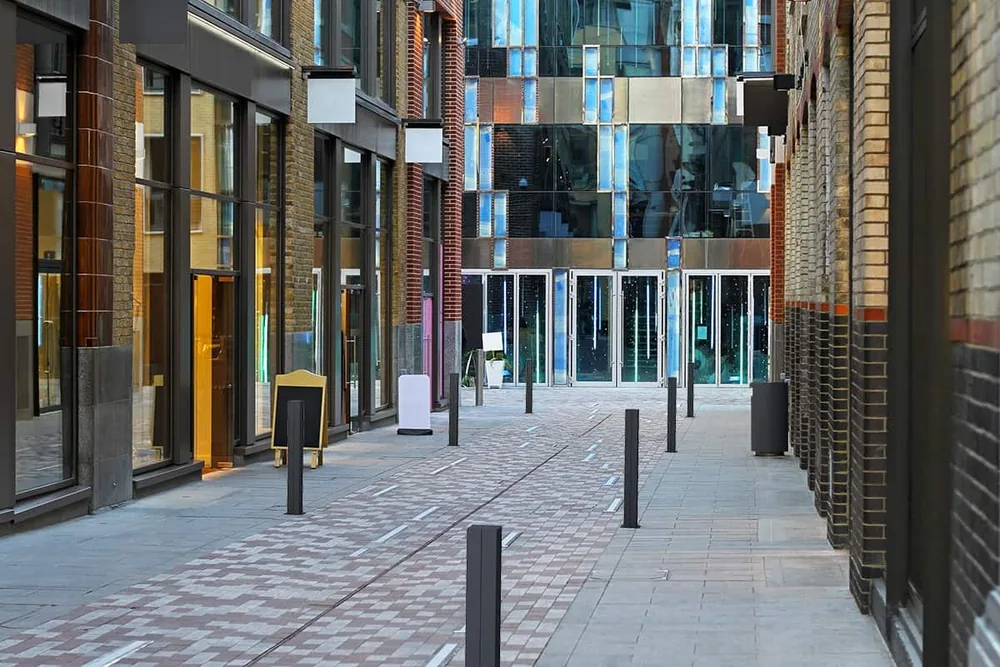
Słupki automatyczne i blokady parkingowe
Blokady wysuwane z ziemi, słupki stałe antytaranowe i półautomatyczne, szlabany z kolczatkami, bramy wjazdowe.
Sprzedaż, montaż i serwis. Od słupka wysuwanego z ziemi przed biurowcem po bramę z testem zderzeniowym IWA 14 (PAS 68).
Zapytaj o wycenęNasze montaże: Warsaw Spire, Port Praski, Wawel, Koneser
Blokady wjazdu, zabezpieczenia antyterrorystyczne i wyposażenie parkingów - dobrane do miejsca, natężenia ruchu i poziomu zagrożenia.

Blokady wysuwane z ziemi, słupki stałe antytaranowe i półautomatyczne, szlabany z kolczatkami, bramy wjazdowe.
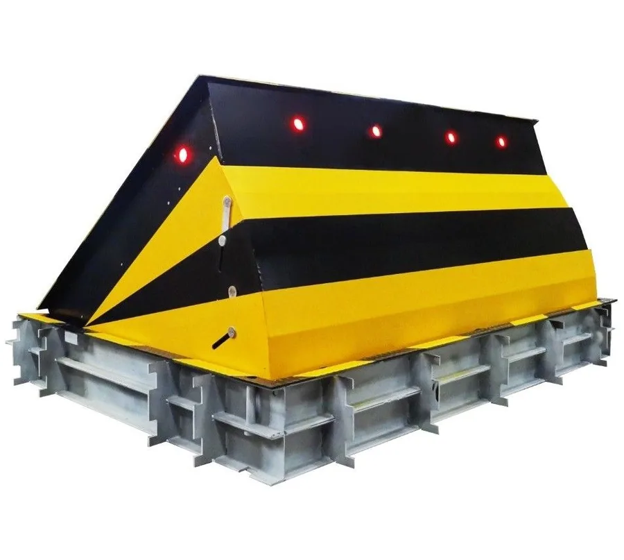
Ochrona przestrzeni miejskiej i budynków specjalnych: bollardy automatyczne i stałe, road blockery, ławki, bramy i szlabany z certyfikatem PAS 68.
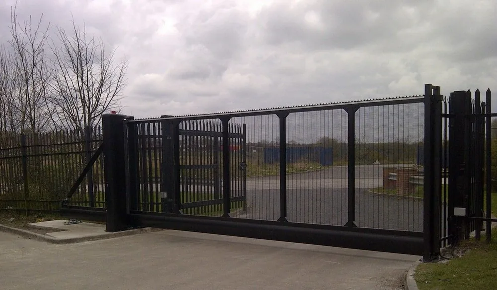
Przesuwne lub skrzydłowe, ręczne albo automatyczne, wykonane zgodnie z IWA 14 - z dokumentem potwierdzającym test zderzeniowy.
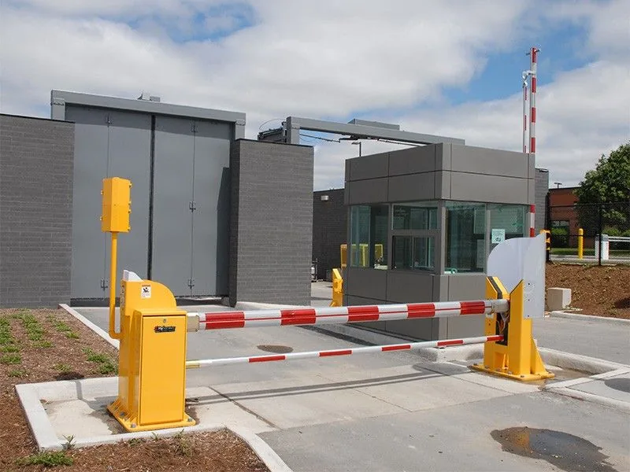
Bariera HVM z ramieniem, wyglądem podobna do zwykłego szlabanu, ale przetestowana według specyfikacji BSI PAS 68.
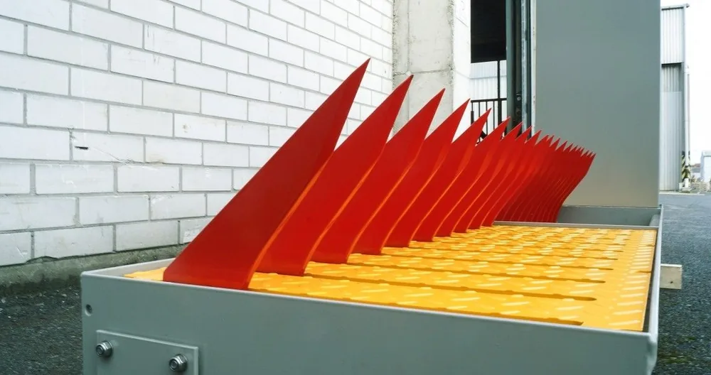
Najprostsze zabezpieczenie przed nieuprawnionym wjazdem lub wyjazdem pojazdu.
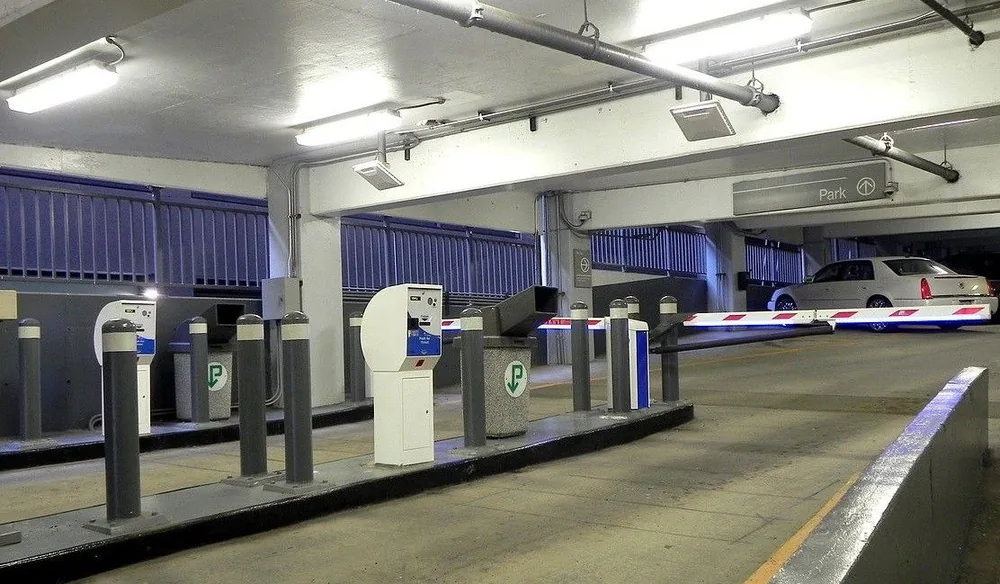
Automatyzacja małych i średnich parkingów: wjazd, wyjazd i rozliczanie bez obsługi.
Tripody, furty, bramki obrotowe i wygrodzenia - ułatwiają pracę ochronie i recepcji.
Telewizja przemysłowa (także rozpoznawanie tablic), progi zwalniające, lustra drogowe, odbojnice, ograniczniki postoju, znaki.
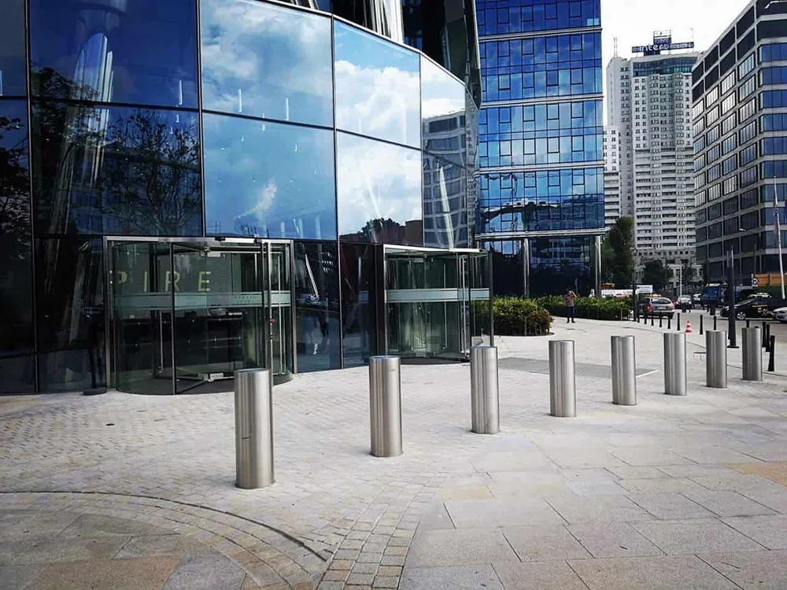
Montaż kilkunastu zapór stałych przed budynkiem Samsung.
Kilka słupków automatycznych na drogach przeciwpożarowych.
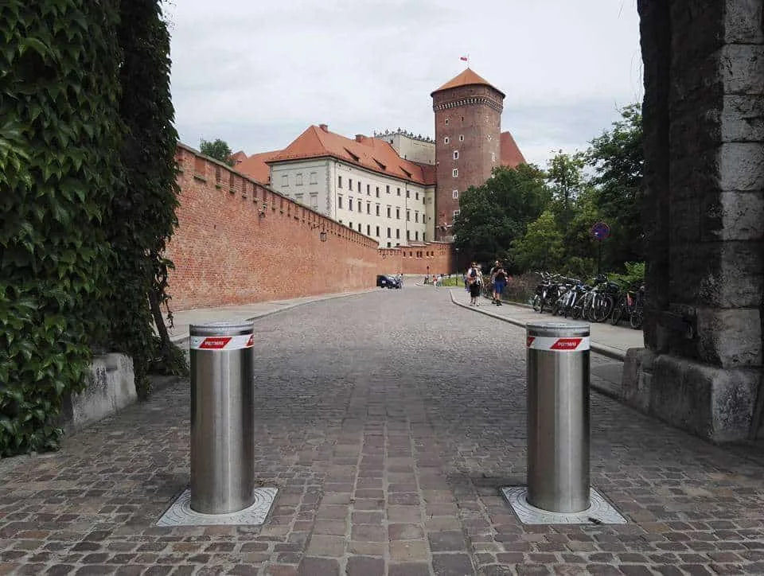
Słupki wysuwane z ziemi w bramie wjazdowej.
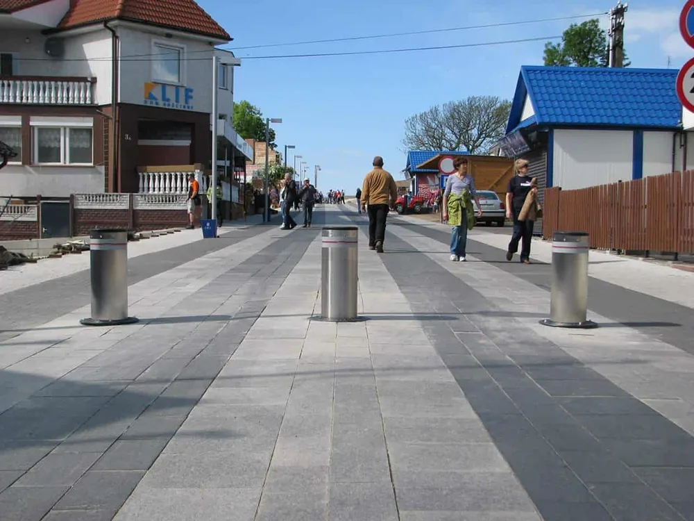
Słupki automatyczne ze stali nierdzewnej zabezpieczające wjazd na nadmorski deptak.
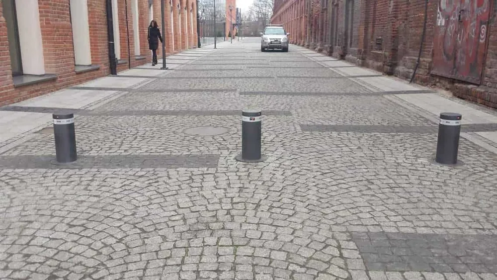
Automatyczne blokady parkingowe na drodze przeciwpożarowej.
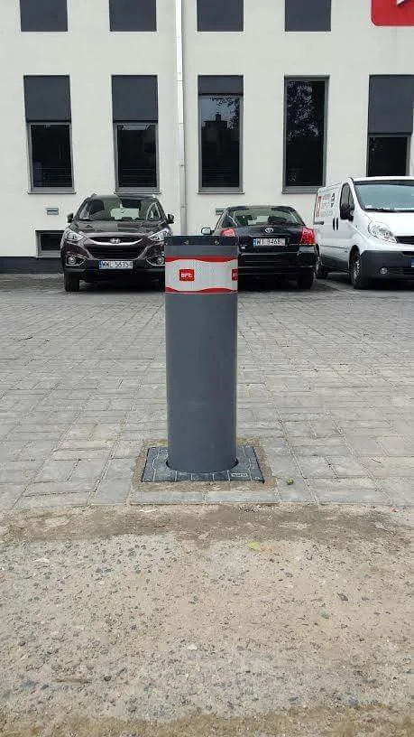
Automatyczna zapora przed wjazdem do instytutu wraz z systemami zabezpieczeń.
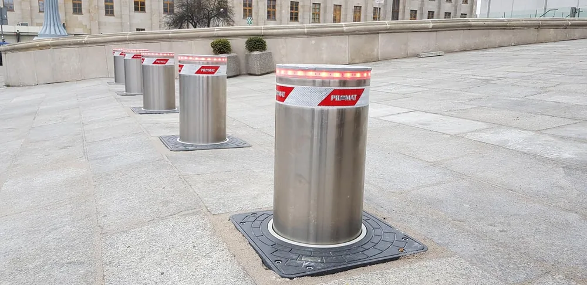
Montaż słupków parkingowych automatycznych.
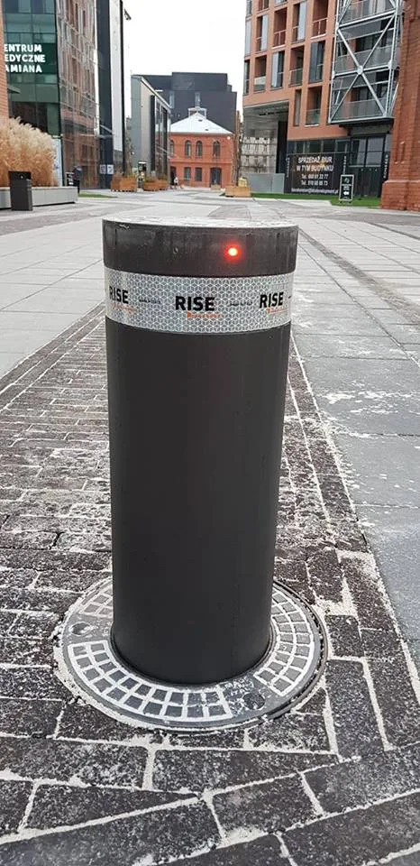
Słupki na wjazdach na teren obiektu.
Przy obiektach wysokiego ryzyka liczy się nie wygląd bariery, tylko to, co zatrzyma. Dlatego do każdej zapory, bramy i szlabanu antyterrorystycznego dostarczamy dokument potwierdzający test zderzeniowy według uznanej normy.
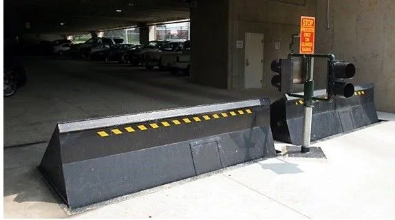
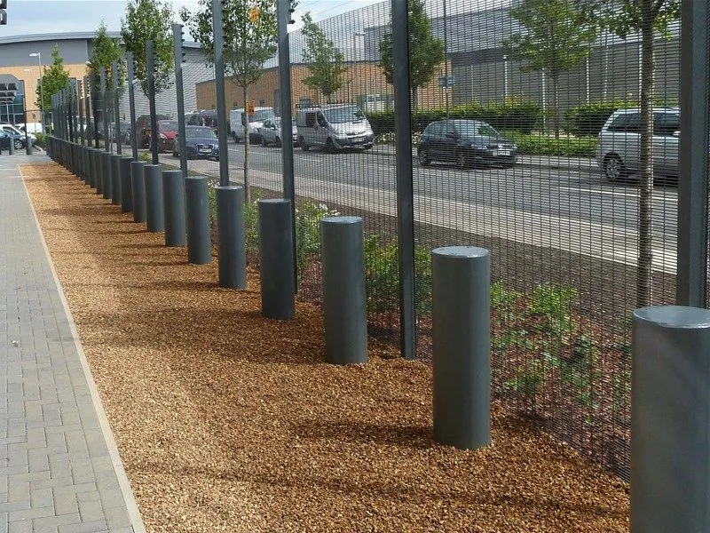
Jedna firma od doboru urządzenia do jego obsługi po latach.
Dobieramy rozwiązanie do miejsca: słupek automatyczny, stały albo półautomatyczny, zaporę, szlaban czy bramę - i do tego, jak często otwiera się wjazd.
Montujemy u klienta: przed biurowcami, w bramach zabytków, na drogach przeciwpożarowych i deptakach. Także słupki na płytki fundament.
Opiekujemy się zamontowanymi urządzeniami, żeby wjazd działał każdego dnia, także przy intensywnej pracy.
Architektów i projektantów zachęcamy do kontaktu przy produktach, które można umieścić w projekcie. Na zapytanie przygotujemy informacje techniczne do:
Opisz wjazd albo obiekt - odpowiemy z propozycją rozwiązania i wyceną.
Używamy plików cookies niezbędnych do działania strony, a za Twoją zgodą także analitycznych i marketingowych. Szczegóły w polityce prywatności.